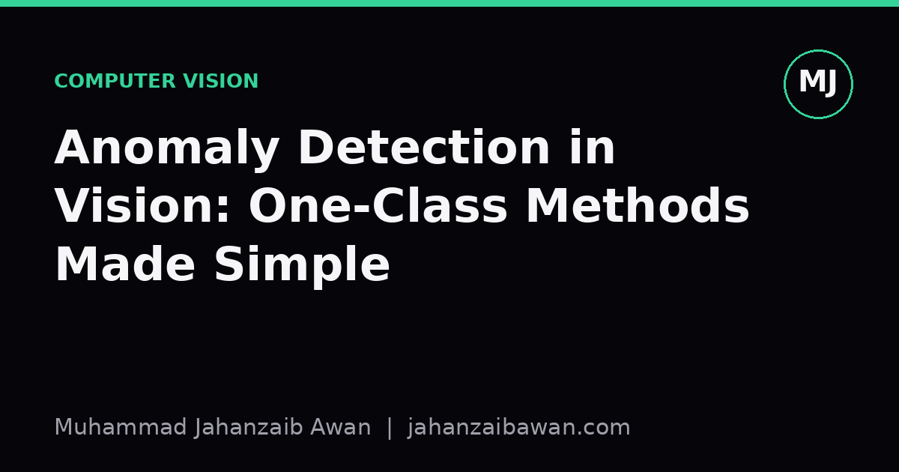
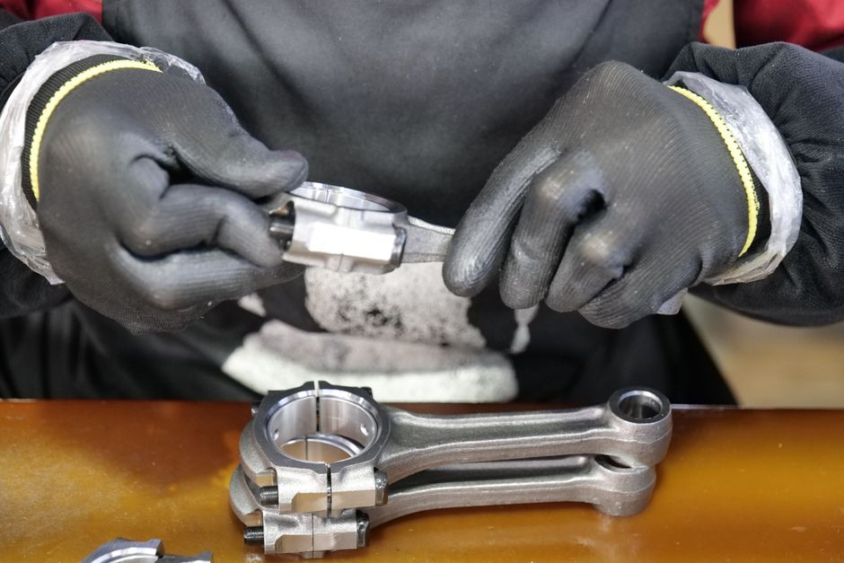

Anomaly Detection in Vision: One-Class Methods Made Simple
When you only have examples of normal, not defective, you need a different way of thinking about classification. Here is the intuition behind one-class anomaly detection.

Why normal supervised learning fails here
Imagine you are building a system to spot scratches on manufactured metal parts. You have thousands of photos of good parts and perhaps a dozen photos of defective ones, because defects are rare by design: the factory is good at its job. A standard supervised classifier wants roughly balanced classes and plenty of examples of every category it must recognise. With twelve scratched parts against ten thousand clean ones, you cannot train a reliable two-class model, and even if you could, it would only recognise the specific defect types it happened to see.
This is the situation one-class methods are built for. Instead of asking a model to separate class A from class B, you ask it to learn a single thing: what does normal look like? Anything that deviates enough from that learned notion of normal gets flagged as anomalous, whether it is a scratch, a dent, a missing component, or a defect type nobody has ever seen before. The model never needs labelled anomalies during training, which matches how most real inspection problems actually arise.
This reframing matters beyond factories. Medical imaging, network security, quality control on production lines, even satellite imagery monitoring: in each case, the interesting cases are rare, expensive to label, and often unknown in advance. One-class thinking turns a hopeless few-shot classification problem into a tractable density estimation or reconstruction problem.
The core idea: learn a compact model of normal
Most one-class approaches share the same skeleton. Train a model exclusively on normal images so it becomes very good at representing or reconstructing that data. Then measure how well a new image fits the model. A good fit means normal; a poor fit means anomalous. The differences between methods come down to how they define fit.
Autoencoders are the most intuitive entry point. You train a neural network to compress an image into a small latent code and then reconstruct it back to the original, using only normal images. Because the network has only ever seen clean parts, it becomes efficient at reconstructing clean parts and comparatively poor at reconstructing anything structurally different. Feed it a scratched part, and the reconstruction error, the pixel-wise difference between input and output, spikes in the region of the scratch. Set a threshold on that error and you have a working detector.
Concretely, suppose your autoencoder achieves an average per-pixel reconstruction error of around 0.02 on held-out normal images, with a standard deviation of 0.01. A defective image producing an error of 0.08 sits many standard deviations above the normal distribution, which gives you a principled threshold rather than an arbitrary cutoff. This is the essence of one-class scoring: turn deviation into a number, then decide how much deviation is tolerable.
Other families follow the same logic with different mechanics. A one-class support vector machine learns a boundary in feature space that encloses the bulk of normal examples as tightly as possible; anything falling outside is anomalous. Deep feature-based methods extract embeddings from a pretrained network, model the distribution of normal embeddings, perhaps with a Gaussian or a nearest-neighbour distance, and flag embeddings that sit far from that distribution. The unifying thread is always: model normal tightly, then measure distance from that model.

Where it quietly goes wrong
The biggest practical trap is leakage during evaluation, and it is easy to introduce without noticing. If your normal training images and your normal test images come from the same production batch, lighting setup, or even the same physical parts photographed twice, your model may learn to recognise that specific batch rather than genuine normality. It will then perform brilliantly in evaluation and disappoint in deployment, because the next batch looks subtly different and the model was never actually tested on that kind of shift.
A related issue is threshold selection. It is tempting to pick the threshold that gives the best score on your test set, but that test set almost certainly contains your only known anomalies, so tuning against it silently turns your test set into a validation set. A more honest approach sets the threshold using only a held-out slice of normal data, perhaps the 99th percentile of reconstruction error on normal validation images, and then reports how that fixed threshold performs on a separate, untouched anomaly set.
It is also worth being honest about what one-class scores actually measure. Reconstruction error and distance-based scores are proxies for anomaly, not anomaly itself. A perfectly normal image taken under unusual lighting can produce a high score for reasons that have nothing to do with defects. This is why one-class systems in practice benefit from careful control over acquisition conditions: consistent lighting, consistent camera position, consistent part orientation. The model is only as reliable as the assumption that normal training data represents the full range of normal variation the system will meet in deployment.
A practical takeaway
If you are approaching a defect detection problem with very few or no labelled anomalies, resist the urge to force a supervised classifier onto badly imbalanced data. Start with a simple one-class baseline: an autoencoder or a distance-based method over pretrained features, trained purely on normal examples, with a threshold set from held-out normal data rather than from the anomalies you happen to have collected. Evaluate on a test set that reflects genuinely new conditions, not just new photographs of the same familiar batch.
Treat any anomaly labels you do have as evaluation gold, not training fuel. Their real value is in telling you honestly how well your one-class model generalises, and in catching the moment when reconstruction error starts confusing lighting changes with genuine defects. Get that evaluation discipline right first, and the choice of specific one-class architecture becomes a much smaller decision than it first appears.